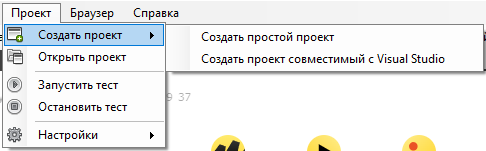
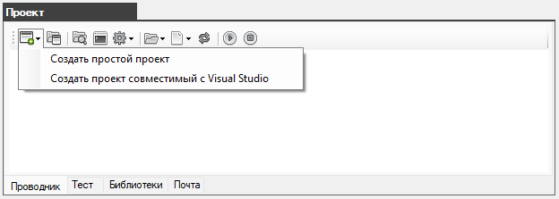
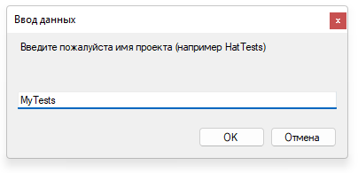
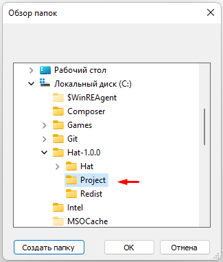
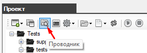
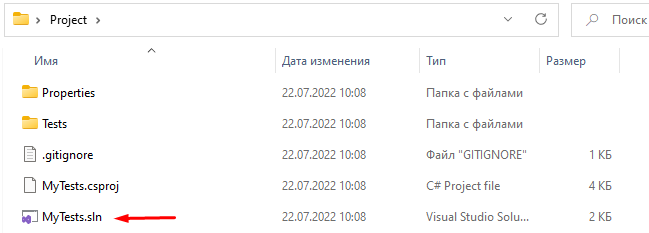
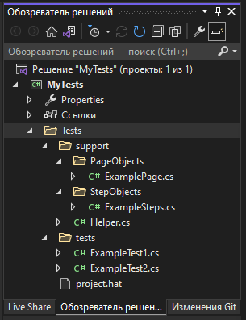
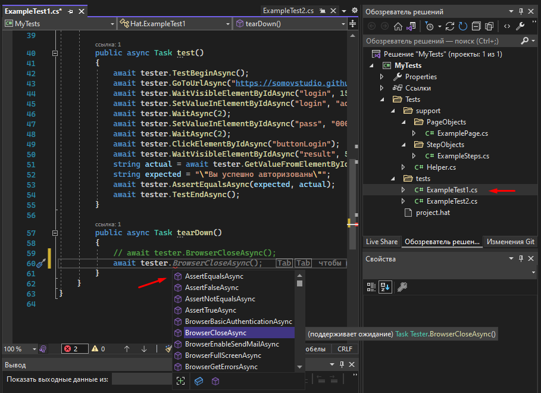
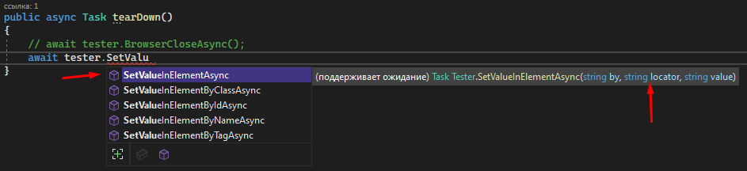

Создание проекта совместимого с Visual Studio
1. В окне "Проект" на вкладке "Проводник" или в основном меню "Создать проект" нажмите кнопку "Создать проект совместимый с Visual Studio"


2. Откроектся поп-ап для ввода имени проекта.
Обязательное условие имя проекта должно быть латинскими буквами и без пробелов.

3. Создайте папку в которой будет содержаться проект с любым именем и в любом месте на диске.
В данном случае создана папка Project по адресу C:\Hat-1.0.0\
Выделите папку проекта и нажмите OK

4. В окне "Проект" на вкладке "Проводник" отобразится содержимое проекта.
Как вы можите видеть проект не пустой, он содержить несколько демонстрационных автотестов.

5. Данный проект поддерживает работы в Visual Studio (предполагается что Visual Studio у вас уже установлен)
Чтобы открыть проект в Visual Studio нажмите в окне "Проект" на кнопку "Проводник"

Затем дважды нажмите на файл с расширением *.sln (в данном случае MyTests.sln)

Когда загрузится Visual Studio сразу будет открыт наш проект и доступен к работе в окне "Обозреватель решений"

Нажмите дважды на файле ExampleTest1.cs чтобы открыть его в редакторе кода.
В 59 строке закоментирована строка с вызовом метода BrowserCloseAsync() который закрывает браузер.
Это нужно для того чтобы браузер автоматически не закрылся по завершению работы автотеста.

Использовать Visual Studio очень удобно тем что редактор при вводе показывает выпадающий список со всеми доступными методами, а так же показывает синтаксис выбранного метода и требуемые ему переменные.

Проект успешно создан.
Created with the Personal Edition of HelpNDoc: Write eBooks for the Kindle